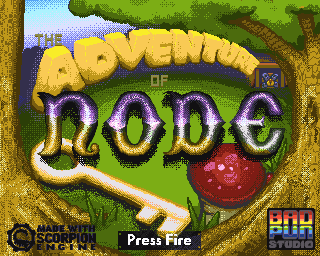

{ wasm_configure('CPU_REVISION','2'); wasm_configure('CPU_OVERCLOCKING','2'); wasm_configure('AGNUS_REVISION','AGA'); wasm_configure('DENISE_REVISION','AGA'); wasm_configure('CHIP_RAM','2048'); wasm_configure('SLOW_RAM','0'); wasm_configure('FAST_RAM','8192'); wasm_configure('floppy_drive_count','1'); wasm_configure('WARP_MODE','WARP_ALWAYS'); } on_hdr_step=(drive_number,cylinder)=>{ on_power_led_dim=()=>{ wasm_configure('WARP_MODE','WARP_NEVER'); on_power_led_dim=()=>{}; } on_hdr_step=()=>{}; } `, url:'https://wearetlu.github.io/node/zip/Node-v003.hdf.zip' }; vAmigaWeb_player.load(this,encodeURIComponent(JSON.stringify(config))); return false; " />